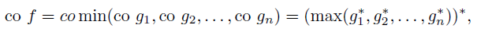
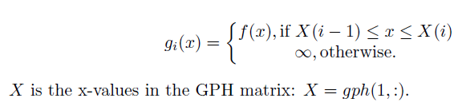

Piecewise linear quadratic (plq), Convex hull (splitting algorithm)
plqco = plq_coSplit(plqf)
matrix. A plq function whose convex hull will be computed.
matrix. A plq function that is the convex hull of the original function.
Computes the convex hull of a continuous, but not necessarily convex, plq function, where the input and output are given in the form of a plq matrix.
This algorithm works by reformulating the convex hull of f as

where co represents the convex hull, max/min are functions that are the pointwise minima and maxima of their arguments, * is the convex conjugate, and each g_i is defined via

plq_coSplit requires worst-case quadratic time, and best-case linear time. g_i* require O(1) work, but the model may grow as its maximum is computed with each g_i*, so the max takes O(n^2) time to compute, where n is the number of points stored in f's GPH matrix. The final conjugate is a linear operation.
% The hull of a linear-linear-quadratic function: plqf = [0,0,0,inf; 1,0,-1,1; 2,0,1,-1; 3,0,-1,3; 4,0,1,-3; inf,0,0,inf]; result = plq_coSplit(plqf), plq_plotMultiple(false, false, plqf, result); % The hull of a more complicated function: plqf = [-3,1,8,16;0,0,1,4;3,0,-1,4;inf,1,-8,16]; result = plq_coSplit(plqf), plq_plotMultiple(false, false, plqf, result); |
Bryan Gardiner, University of British Columbia, BC, Canada